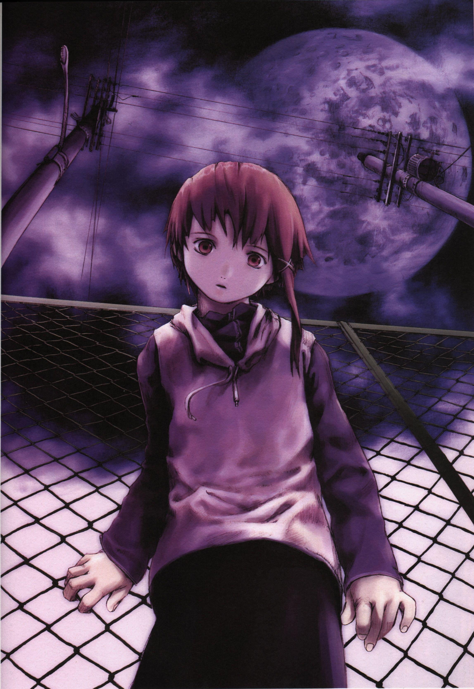

Serial Experiments Lain

I won't spoil the anime, but I will talk about related topics.
To be conscious, one has to be conscions of something.
For that reason, you might guess, that to see something is to be conscious of
that something, for example, to see a chair, is to be conscios of the chair
and what it looks like. However, this is a mistake, for the chair and what
it really is is naught but a secret, it is incognoscible. We only know the chair
through our senses, and in this case, our vision, our eyes. To "know" the chair
we must use our eyes, but then what is of the chair gets filtered by our eyes,
and we only see what our eyes can percieve, the light that bounces off the chair.
If this is so, it'll be possible to argue, that we are not conscious of the
chair but of our eye's reaction to percieving the chair, that is, the electrical
signals it sends to our brain, the part of us that is conscious.
Thus, to be conscious is, in reality, not to be conscious of the world but of one's
body, and for this reason, for a conscious like ours to arise, a body is always
needed.
To form a consciousness like that of a human, it is necessary to form and ego, and
this can only be done by feeling that one's body is one's own. If there is an
alienation from the body, then the ego 'dies', and thus the conscious no longer
is of the body, but of something else, thus no longer human like.